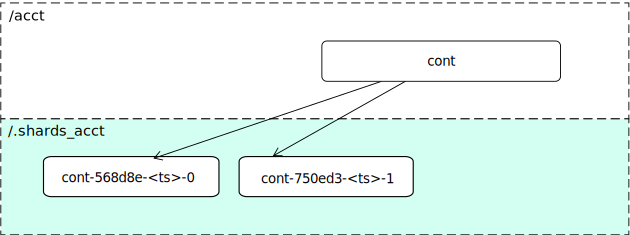
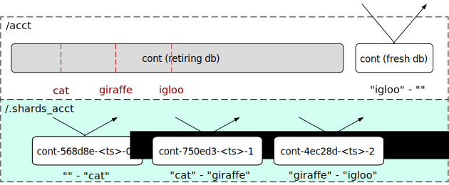
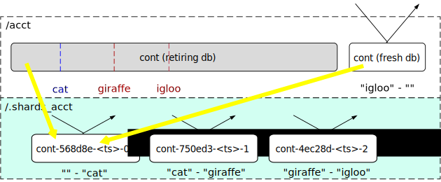
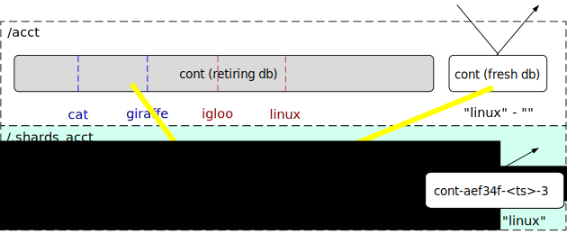

Container Sharding¶
Container sharding is an operator controlled feature that may be used to shard very large container databases into a number of smaller shard containers
Note
It is strongly recommended that operators gain experience of sharding containers in a non-production cluster before using in production.
The sharding process involves moving all sharding container database records via the container replication engine; the time taken to complete sharding is dependent upon the existing cluster load and the performance of the container database being sharded.
There is currently no documented process for reversing the sharding process once sharding has been enabled.
Background¶
The metadata for each container in Swift is stored in an SQLite database. This metadata includes: information about the container such as its name, modification time and current object count; user metadata that may been written to the container by clients; a record of every object in the container. The container database object records are used to generate container listings in response to container GET requests; each object record stores the object’s name, size, hash and content-type as well as associated timestamps.
As the number of objects in a container increases then the number of object records in the container database increases. Eventually the container database performance starts to degrade and the time taken to update an object record increases. This can result in object updates timing out, with a corresponding increase in the backlog of pending asynchronous updates on object servers. Container databases are typically replicated on several nodes and any database performance degradation can also result in longer container replication times.
The point at which container database performance starts to degrade depends upon the choice of hardware in the container ring. Anecdotal evidence suggests that containers with tens of millions of object records have noticeably degraded performance.
This performance degradation can be avoided by ensuring that clients use an object naming scheme that disperses objects across a number of containers thereby distributing load across a number of container databases. However, that is not always desirable nor is it under the control of the cluster operator.
Swift’s container sharding feature provides the operator with a mechanism to distribute the load on a single client-visible container across multiple, hidden, shard containers, each of which stores a subset of the container’s object records. Clients are unaware of container sharding; clients continue to use the same API to access a container that, if sharded, maps to a number of shard containers within the Swift cluster.
Deployment and operation¶
Upgrade Considerations¶
It is essential that all servers in a Swift cluster have been upgraded to support the container sharding feature before attempting to shard a container.
Identifying containers in need of sharding¶
Container sharding is currently initiated by the swift-manage-shard-ranges
CLI tool described below. Operators must
first identify containers that are candidates for sharding. To assist with
this, the container-sharder daemon inspects the size of containers that it visits
and writes a list of sharding candidates to recon cache. For example:
"sharding_candidates": {
"found": 1,
"top": [
{
"account": "AUTH_test",
"container": "c1",
"file_size": 497763328,
"meta_timestamp": "1525346445.31161",
"node_index": 2,
"object_count": 3349028,
"path": <path_to_db>,
"root": "AUTH_test/c1"
}
]
}
A container is considered to be a sharding candidate if its object count is
greater than or equal to the shard_container_threshold option.
The number of candidates reported is limited to a number configured by the
recon_candidates_limit option such that only the largest candidate
containers are included in the sharding_candidates data.
swift-manage-shard-ranges CLI tool¶
The swift-manage-shard-ranges tool provides commands for initiating
sharding of a container. swift-manage-shard-ranges operates directly on a
container database file.
Note
swift-manage-shard-ranges must only be used on one replica of a
container database to avoid inconsistent results. The modifications made by
swift-manage-shard-ranges will be automatically copied to other
replicas of the container database via normal replication processes.
There are three steps in the process of initiating sharding, each of which may be performed in isolation or, as shown below, using a single command.
The
findsub-command scans the container database to identify how many shard containers will be required and which objects they will manage. Each shard container manages a range of the object namespace defined by alowerandupperbound. The maximum number of objects to be allocated to each shard container is specified on the command line. For example:$ swift-manage-shard-ranges <path_to_db> find 500000 Loaded db broker for AUTH_test/c1. [ { "index": 0, "lower": "", "object_count": 500000, "upper": "o_01086834" }, { "index": 1, "lower": "o_01086834", "object_count": 500000, "upper": "o_01586834" }, { "index": 2, "lower": "o_01586834", "object_count": 500000, "upper": "o_02087570" }, { "index": 3, "lower": "o_02087570", "object_count": 500000, "upper": "o_02587572" }, { "index": 4, "lower": "o_02587572", "object_count": 500000, "upper": "o_03087572" }, { "index": 5, "lower": "o_03087572", "object_count": 500000, "upper": "o_03587572" }, { "index": 6, "lower": "o_03587572", "object_count": 349194, "upper": "" } ] Found 7 ranges in 4.37222s (total object count 3349194)This command returns a list of shard ranges each of which describes the namespace to be managed by a shard container. No other action is taken by this command and the container database is unchanged. The output may be redirected to a file for subsequent retrieval by the
replacecommand. For example:$ swift-manage-shard-ranges <path_to_db> find 500000 > my_shard_ranges Loaded db broker for AUTH_test/c1. Found 7 ranges in 2.448s (total object count 3349194)
The
replacesub-command deletes any shard ranges that might already be in the container database and inserts shard ranges from a given file. The file contents should be in the format generated by thefindsub-command. For example:$ swift-manage-shard-ranges <path_to_db> replace my_shard_ranges Loaded db broker for AUTH_test/c1. No shard ranges found to delete. Injected 7 shard ranges. Run container-replicator to replicate them to other nodes. Use the enable sub-command to enable sharding.
The container database is modified to store the shard ranges, but the container will not start sharding until sharding is enabled. The
infosub-command may be used to inspect the state of the container database at any point, and theshowsub-command may be used to display the inserted shard ranges.Shard ranges stored in the container database may be replaced using the
replacesub-command. This will first delete all existing shard ranges before storing new shard ranges. Shard ranges may also be deleted from the container database using thedeletesub-command.Shard ranges should not be replaced or deleted using
swift-manage-shard-rangesonce the next step of enabling sharding has been taken.The
enablesub-command enables the container for sharding. The sharder daemon and/or container replicator daemon will replicate shard ranges to other replicas of the container DB and the sharder daemon will proceed to shard the container. This process may take some time depending on the size of the container, the number of shard ranges and the underlying hardware.Note
Once the
enablesub-command has been used there is no supported mechanism to revert sharding. Do not useswift-manage-shard-rangesto make any further changes to the shard ranges in the container DB.For example:
$ swift-manage-shard-ranges <path_to_db> enable Loaded db broker for AUTH_test/c1. Container moved to state 'sharding' with epoch 1525345093.22908. Run container-sharder on all nodes to shard the container.
This does not shard the container - sharding is performed by the container-sharder daemon - but sets the necessary state in the database for the daemon to subsequently start the sharding process.
The
epochvalue displayed in the output is the time at which sharding was enabled. When the container-sharder daemon starts sharding this container it creates a new container database file using the epoch in the filename to distinguish it from the retiring DB that is being sharded.
All three steps may be performed with one sub-command:
$ swift-manage-shard-ranges <path_to_db> find_and_replace 500000 --enable --force
Loaded db broker for AUTH_test/c1.
No shard ranges found to delete.
Injected 7 shard ranges.
Run container-replicator to replicate them to other nodes.
Container moved to state 'sharding' with epoch 1525345669.46153.
Run container-sharder on all nodes to shard the container.
- exception swift.cli.manage_shard_ranges.GapsFoundException¶
Bases:
ManageShardRangesException
- exception swift.cli.manage_shard_ranges.InvalidSolutionException(msg, acceptor_path, overlapping_donors)¶
Bases:
ManageShardRangesException
- exception swift.cli.manage_shard_ranges.InvalidStateException¶
Bases:
ManageShardRangesException
- exception swift.cli.manage_shard_ranges.ManageShardRangesException¶
Bases:
Exception
- swift.cli.manage_shard_ranges.wrap_for_argparse(func, msg=None)¶
Wrap the given
functo catch anyValueErrorand raise anargparse.ArgumentTypeErrorinstead.- Parameters:
func – a function.
msg – an optional message to use with any exception that is used; if not given then the string representation of the ValueError will be used.
- Returns:
a function wrapper.
container-sharder daemon¶
Once sharding has been enabled for a container, the act of sharding is
performed by the Container Sharder. The Container Sharder daemon
must be running on all container servers. The container-sharder daemon
periodically visits each container database to perform any container sharding
tasks that are required.
The container-sharder daemon requires a [container-sharder] config
section to exist in the container server configuration file; a sample config
section is shown in the container-server.conf-sample file.
Note
The auto_shard option is currently NOT recommended for production
systems and should be set to false (the default value).
Several of the [container-sharder] config options are only significant
when the auto_shard option is enabled. This option enables the
container-sharder daemon to automatically identify containers that are
candidates for sharding and initiate the sharding process, instead of using
the swift-manage-shard-ranges tool.
The container sharder uses an internal client and therefore requires an
internal client configuration file to exist. By default the internal-client
configuration file is expected to be found at
/etc/swift/internal-client.conf. An alternative location for the
configuration file may be specified using the internal_client_conf_path
option in the [container-sharder] config section.
The content of the internal-client configuration file should be the same as the internal-client.conf-sample file. In particular, the internal-client configuration should have:
account_autocreate = True
in the [proxy-server] section.
A container database may require several visits by the container-sharder
daemon before it is fully sharded. On each visit the container-sharder
daemon will move a subset of object records to new shard containers by cleaving
new shard container databases from the original. By default, two shards are
processed per visit; this number may be configured by the cleave_batch_size
option.
The container-sharder daemon periodically writes progress data for
containers that are being sharded to recon cache. For example:
"sharding_in_progress": {
"all": [
{
"account": "AUTH_test",
"active": 0,
"cleaved": 2,
"container": "c1",
"created": 5,
"db_state": "sharding",
"error": null,
"file_size": 26624,
"found": 0,
"meta_timestamp": "1525349617.46235",
"node_index": 1,
"object_count": 3349030,
"path": <path_to_db>,
"root": "AUTH_test/c1",
"state": "sharding"
}
]
}
This example indicates that from a total of 7 shard ranges, 2 have been cleaved whereas 5 remain in created state waiting to be cleaved.
Shard containers are created in an internal account and not visible to clients.
By default, shard containers for an account AUTH_test are created in the
internal account .shards_AUTH_test.
Once a container has started sharding, object updates to that container may be
redirected to the shard container. The container-sharder daemon is also
responsible for sending updates of a shard’s object count and bytes_used to the
original container so that aggegrate object count and bytes used values can be
returned in responses to client requests.
Note
The container-sharder daemon must continue to run on all container
servers in order for shards object stats updates to be generated.
Under the hood¶
Terminology¶
Name |
Description |
|---|---|
Root container |
The original container that lives in the user’s account. It holds references to its shard containers. |
Retiring DB |
The original database file that is to be sharded. |
Fresh DB |
A database file that will replace the retiring database. |
Epoch |
A timestamp at which the fresh DB is created; the epoch value is embedded in the fresh DB filename. |
Shard range |
A range of the object namespace defined by a lower bound and upper bound. |
Shard container |
A container that holds object records for a shard range. Shard containers exist in a hidden account mirroring the user’s account. |
Parent container |
The container from which a shard container has been cleaved. When first sharding a root container each shard’s parent container will be the root container. When sharding a shard container each shard’s parent container will be the sharding shard container. |
Misplaced objects |
Items that don’t belong in a container’s shard range. These will be moved to their correct location by the container-sharder. |
Cleaving |
The act of moving object records within a shard range to a shard container database. |
Shrinking |
The act of merging a small shard container into another shard container in order to delete the small shard container. |
Donor |
The shard range that is shrinking away. |
Acceptor |
The shard range into which a donor is merged. |
Finding shard ranges¶
The end goal of sharding a container is to replace the original container database which has grown very large with a number of shard container databases, each of which is responsible for storing a range of the entire object namespace. The first step towards achieving this is to identify an appropriate set of contiguous object namespaces, known as shard ranges, each of which contains a similar sized portion of the container’s current object content.
Shard ranges cannot simply be selected by sharding the namespace uniformly, because object names are not guaranteed to be distributed uniformly. If the container were naively sharded into two shard ranges, one containing all object names up to m and the other containing all object names beyond m, then if all object names actually start with o the outcome would be an extremely unbalanced pair of shard containers.
It is also too simplistic to assume that every container that requires sharding can be sharded into two. This might be the goal in the ideal world, but in practice there will be containers that have grown very large and should be sharded into many shards. Furthermore, the time required to find the exact mid-point of the existing object names in a large SQLite database would increase with container size.
For these reasons, shard ranges of size N are found by searching for the Nth object in the database table, sorted by object name, and then searching for the (2 * N)th object, and so on until all objects have been searched. For a container that has exactly 2N objects, the end result is the same as sharding the container at the midpoint of its object names. In practice sharding would typically be enabled for containers with great than 2N objects and more than two shard ranges will be found, the last one probably containing less than N objects. With containers having large multiples of N objects, shard ranges can be identified in batches which enables more scalable solution.
To illustrate this process, consider a very large container in a user account
acct that is a candidate for sharding:
The swift-manage-shard-ranges CLI tool tool find sub-command searches the
object table for the Nth object whose name will become the upper bound of the
first shard range, and the lower bound of the second shard range. The lower
bound of the first shard range is the empty string.
For the purposes of this example the first upper bound is cat:
swift-manage-shard-ranges CLI tool continues to search the container to find further shard ranges, with the final upper bound also being the empty string.
Enabling sharding¶
Once shard ranges have been found the swift-manage-shard-ranges CLI tool
replace sub-command is used to insert them into the shard_ranges table
of the container database. In addition to its lower and upper bounds, each
shard range is given a unique name.
The enable sub-command then creates some final state required to initiate
sharding the container, including a special shard range record referred to as
the container’s own_shard_range whose name is equal to the container’s path.
This is used to keep a record of the object namespace that the container
covers, which for user containers is always the entire namespace. Sharding of
the container will only begin when its own shard range’s state has been set to
SHARDING.
The ShardRange class¶
The ShardRange class provides methods for
interactng with the attributes and state of a shard range. The class
encapsulates the following properties:
The name of the shard range which is also the name of the shard container used to hold object records in its namespace.
Lower and upper bounds which define the object namespace of the shard range.
A deleted flag.
A timestamp at which the bounds and deleted flag were last modified.
The object stats for the shard range i.e. object count and bytes used.
A timestamp at which the object stats were last modified.
The state of the shard range, and an epoch, which is the timestamp used in the shard container’s database file name.
A timestamp at which the state and epoch were last modified.
A shard range progresses through the following states:
FOUND: the shard range has been identified in the container that is to be sharded but no resources have been created for it.
CREATED: a shard container has been created to store the contents of the shard range.
CLEAVED: the sharding container’s contents for the shard range have been copied to the shard container from at least one replica of the sharding container.
ACTIVE: a sharding container’s constituent shard ranges are moved to this state when all shard ranges in the sharding container have been cleaved.
SHRINKING: the shard range has been enabled for shrinking; or
SHARDING: the shard range has been enabled for sharding into further sub-shards.
SHARDED: the shard range has completed sharding or shrinking; the container will typically now have a number of constituent ACTIVE shard ranges.
Note
Shard range state represents the most advanced state of the shard range on any replica of the container. For example, a shard range in CLEAVED state may not have completed cleaving on all replicas but has cleaved on at least one replica.
Fresh and retiring database files¶
As alluded to earlier, writing to a large container causes increased latency for the container servers. Once sharding has been initiated on a container it is desirable to stop writing to the large database; ultimately it will be unlinked. This is primarily achieved by redirecting object updates to new shard containers as they are created (see Redirecting object updates below), but some object updates may still need to be accepted by the root container and other container metadata must still be modifiable.
To render the large retiring database effectively read-only, when the container-sharder daemon finds a container with a set of shard range records, including an own_shard_range, it first creates a fresh database file which will ultimately replace the existing retiring database. For a retiring DB whose filename is:
<hash>.db
the fresh database file name is of the form:
<hash>_<epoch>.db
where epoch is a timestamp stored in the container’s own_shard_range.
The fresh DB has a copy of the shard ranges table from the retiring DB and all other container metadata apart from the object records. Once a fresh DB file has been created it is used to store any new object updates and no more object records are written to the retiring DB file.
Once the sharding process has completed, the retiring DB file will be unlinked leaving only the fresh DB file in the container’s directory. There are therefore three states that the container DB directory may be in during the sharding process: UNSHARDED, SHARDING and SHARDED.

If the container ever shrink to the point that is has no shards then the fresh DB starts to store object records, behaving the same as an unsharded container. This is known as the COLLAPSED state.
In summary, the DB states that any container replica may be in are:
UNSHARDED - In this state there is just one standard container database. All containers are originally in this state.
SHARDING - There are now two databases, the retiring database and a fresh database. The fresh database stores any metadata, container level stats, an object holding table, and a table that stores shard ranges.
SHARDED - There is only one database, the fresh database, which has one or more shard ranges in addition to its own shard range. The retiring database has been unlinked.
COLLAPSED - There is only one database, the fresh database, which has only its own shard range and store object records.
Note
DB state is unique to each replica of a container and is not necessarily synchronised with shard range state.
Creating shard containers¶
The container-sharder daemon next creates a shard container for each shard range using the shard range name as the name of the shard container:
Each shard container has an own_shard_range record which has the lower and upper bounds of the object namespace for which it is responsible, and a reference to the sharding user container, which is referred to as the root_container. Unlike the root_container, the shard container’s own_shard_range does not cover the entire namepsace.
A shard range name takes the form <shard_a>/<shard_c> where <shard_a>
is a hidden account and <shard_c> is a container name that is derived from
the root container.
The account name <shard_a> used for shard containers is formed by prefixing
the user account with the string .shards_. This avoids namespace collisions
and also keeps all the shard containers out of view from users of the account.
The container name for each shard container has the form:
<root container name>-<hash of parent container>-<timestamp>-<shard index>
where root container name is the name of the user container to which the contents of the shard container belong, parent container is the name of the container from which the shard is being cleaved, timestamp is the time at which the shard range was created and shard index is the position of the shard range in the name-ordered list of shard ranges for the parent container.
When sharding a user container the parent container name will be the same as the root container. However, if a shard container grows to a size that it requires sharding, then the parent container name for its shards will be the name of the sharding shard container.
For example, consider a user container with path AUTH_user/c which is
sharded into two shard containers whose name will be:
.shards_AUTH_user/c-<hash(c)>-1234512345.12345-0
.shards_AUTH_user/c-<hash(c)>-1234512345.12345-1
If the first shard container is subsequently sharded into a further two shard containers then they will be named:
.shards_AUTH_user/c-<hash(c-<hash(c)>-1234567890.12345-0)>-1234567890.12345-0
.shards_AUTH_user/c-<hash(c-<hash(c)>-1234567890.12345-0)>-1234567890.12345-1
This naming scheme guarantees that shards, and shards of shards, each have a unique name of bounded length.
Cleaving shard containers¶
Having created empty shard containers the sharder daemon will proceed to cleave objects from the retiring database to each shard range. Cleaving occurs in batches of two (by default) shard ranges, so if a container has more than two shard ranges then the daemon must visit it multiple times to complete cleaving.
To cleave a shard range the daemon creates a shard database for the shard container on a local device. This device may be one of the shard container’s primary nodes but often it will not. Object records from the corresponding shard range namespace are then copied from the retiring DB to this shard DB.
Swift’s container replication mechanism is then used to replicate the shard DB
to its primary nodes. Checks are made to ensure that the new shard container DB
has been replicated to a sufficient number of its primary nodes before it is
considered to have been successfully cleaved. By default the daemon requires
successful replication of a new shard broker to at least a quorum of the
container rings replica count, but this requirement can be tuned using the
shard_replication_quorum option.
Once a shard range has been successfully cleaved from a retiring database the
daemon transitions its state to CLEAVED. It should be noted that this state
transition occurs as soon as any one of the retiring DB replicas has cleaved
the shard range, and therefore does not imply that all retiring DB replicas
have cleaved that range. The significance of the state transition is that the
shard container is now considered suitable for contributing to object listings,
since its contents are present on a quorum of its primary nodes and are the
same as at least one of the retiring DBs for that namespace.
Once a shard range is in the CLEAVED state, the requirement for
‘successful’ cleaving of other instances of the retirng DB may optionally be
relaxed since it is not so imperative that their contents are replicated
immediately to their primary nodes. The existing_shard_replication_quorum
option can be used to reduce the quorum required for a cleaved shard range to
be considered successfully replicated by the sharder daemon.
Note
Once cleaved, shard container DBs will continue to be replicated by the normal container-replicator daemon so that they will eventually be fully replicated to all primary nodes regardless of any replication quorum options used by the sharder daemon.
The cleaving progress of each replica of a retiring DB must be tracked independently of the shard range state. This is done using a per-DB CleavingContext object that maintains a cleaving cursor for the retiring DB that it is associated with. The cleaving cursor is simply the upper bound of the last shard range to have been cleaved from that particular retiring DB.
Each CleavingContext is stored in the sharding container’s sysmeta under a key
that is the id of the retiring DB. Since all container DB files have a
unique id, this guarantees that each retiring DB will have a unique
CleavingContext. Furthermore, if the retiring DB file is changed, for example
by an rsync_then_merge replication operation which might change the contents of
the DB’s object table, then it will get a new unique CleavingContext.
A CleavingContext maintains other state that is used to ensure that a retiring DB is only considered to be fully cleaved, and ready to be deleted, if all of its object rows have been cleaved to a shard range.
Once all shard ranges have been cleaved from the retiring DB it is deleted. The container is now represented by the fresh DB which has a table of shard range records that point to the shard containers that store the container’s object records.
Redirecting object updates¶
Once a shard container exists, object updates arising from new client requests and async pending files are directed to the shard container instead of the root container. This takes load off of the root container.
For a sharded (or partially sharded) container, when the proxy receives a new object request it issues a GET request to the container for data describing a shard container to which the object update should be sent. The proxy then annotates the object request with the shard container location so that the object server will forward object updates to the shard container. If those updates fail then the async pending file that is written on the object server contains the shard container location.
When the object updater processes async pending files for previously failed object updates, it may not find a shard container location. In this case the updater sends the update to the root container, which returns a redirection response with the shard container location.
Note
Object updates are directed to shard containers as soon as they exist, even if the retiring DB object records have not yet been cleaved to the shard container. This prevents further writes to the retiring DB and also avoids the fresh DB being polluted by new object updates. The goal is to ultimately have all object records in the shard containers and none in the root container.
Building container listings¶
Listing requests for a sharded container are handled by querying the shard containers for components of the listing. The proxy forwards the client listing request to the root container, as it would for an unsharded container, but the container server responds with a list of shard ranges rather than objects. The proxy then queries each shard container in namespace order for their listing, until either the listing length limit is reached or all shard ranges have been listed.
While a container is still in the process of sharding, only cleaved shard ranges are used when building a container listing. Shard ranges that have not yet cleaved will not have any object records from the root container. The root container continues to provide listings for the uncleaved part of its namespace.
Note
New object updates are redirected to shard containers that have not yet been cleaved. These updates will not therefore be included in container listings until their shard range has been cleaved.
Example request redirection¶
As an example, consider a sharding container in which 3 shard ranges have been found ending in cat, giraffe and igloo. Their respective shard containers have been created so update requests for objects up to “igloo” are redirected to the appropriate shard container. The root DB continues to handle listing requests and update requests for any object name beyond “igloo”.
The sharder daemon cleaves objects from the retiring DB to the shard range DBs; it also moves any misplaced objects from the root container’s fresh DB to the shard DB. Cleaving progress is represented by the blue line. Once the first shard range has been cleaved listing requests for that namespace are directed to the shard container. The root container still provides listings for the remainder of the namespace.
The process continues: the sharder cleaves the next range and a new range is found with upper bound of “linux”. Now the root container only needs to handle listing requests up to “giraffe” and update requests for objects whose name is greater than “linux”. Load will continue to diminish on the root DB and be dispersed across the shard DBs.
Container replication¶
Shard range records are replicated between container DB replicas in much the same way as object records are for unsharded containers. However, the usual replication of object records between replicas of a container is halted as soon as a container is capable of being sharded. Instead, object records are moved to their new locations in shard containers. This avoids unnecessary replication traffic between container replicas.
To facilitate this, shard ranges are both ‘pushed’ and ‘pulled’ during replication, prior to any attempt to replicate objects. This means that the node initiating replication learns about shard ranges from the destination node early during the replication process and is able to skip object replication if it discovers that it has shard ranges and is able to shard.
Note
When the destination DB for container replication is missing then the ‘complete_rsync’ replication mechanism is still used and in this case only both object records and shard range records are copied to the destination node.
Container deletion¶
Sharded containers may be deleted by a DELETE request just like an
unsharded container. A sharded container must be empty before it can be deleted
which implies that all of its shard containers must have reported that they are
empty.
Shard containers are not immediately deleted when their root container is deleted; the shard containers remain undeleted so that they are able to continue to receive object updates that might arrive after the root container has been deleted. Shard containers continue to update their deleted root container with their object stats. If a shard container does receive object updates that cause it to no longer be empty then the root container will no longer be considered deleted once that shard container sends an object stats update.
Shrinking a shard container¶
A shard container’s contents may reduce to a point where the shard container is no longer required. If this happens then the shard container may be shrunk into another shard range. Shrinking is achieved in a similar way to sharding: an ‘acceptor’ shard range is written to the shrinking shard container’s shard ranges table; unlike sharding, where shard ranges each cover a subset of the sharding container’s namespace, the acceptor shard range is a superset of the shrinking shard range.
Once given an acceptor shard range the shrinking shard will cleave itself to its acceptor, and then delete itself from the root container shard ranges table.